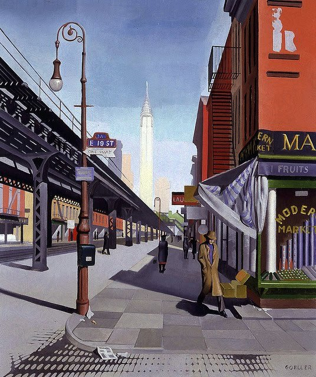
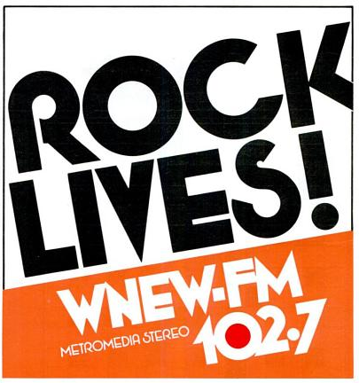
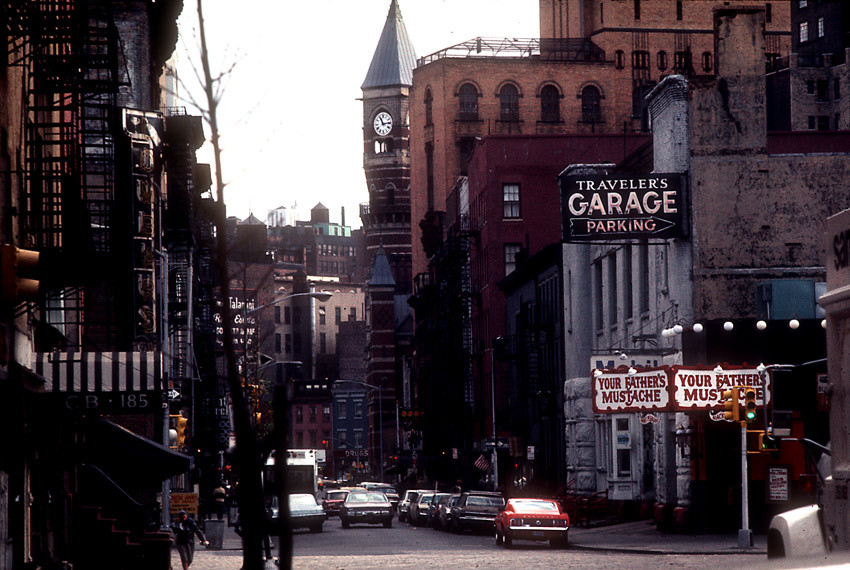
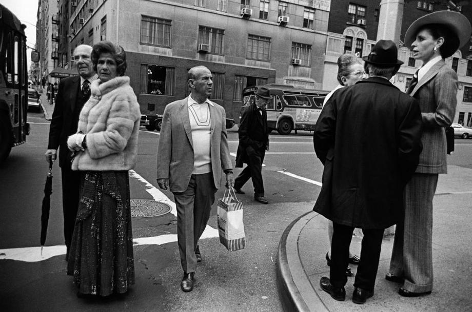

Garbage dude, 1964, midtown.
Garbage dude, 1964, midtown.

Skiing through Manhattan in the 70s.

A 1934 painting of the Third Avenue El by Charles Goeller.
Start of the NYC Marathon, 1977, at the Verrazano Bridge.

Hot in Times Square, 1977.

Allan Tannenbaum - LES 1970’s

Lee Remick, The Bowery, New York City, 1960
Sam Shaw

1979 print ad. 102.7.
Happy 4th of July!

Your Father’s Mustache, Greenwich Village in the 70s.
Screencap from the movie “The Stuff”, 1985.

Vandal on the IRT.

The East Side in 1973. All kinds of pretentious.